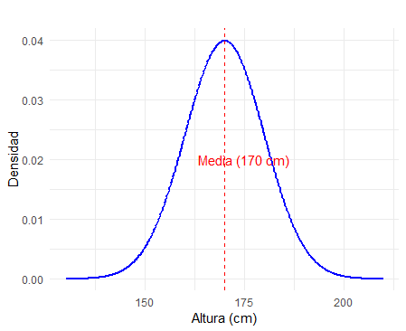
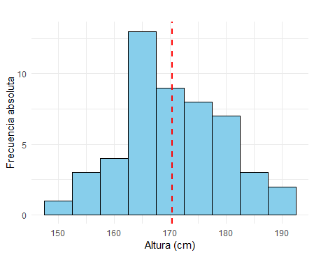
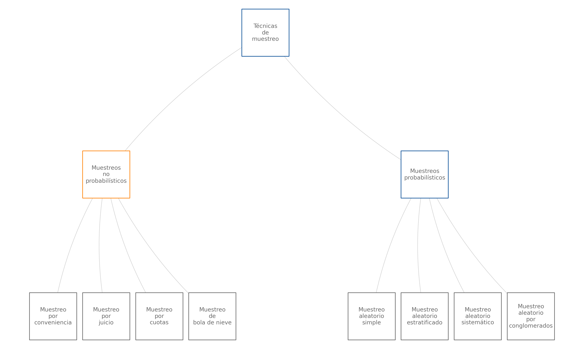

Algunas definiciones de la estadística son las siguientes:
“Estudio matemático de la incertidumbre y la variabilidad que proporciona herramientas y métodos para describir, modelar y analizar fenómenos aleatorios, y tomar decisiones basadas en la información disponible.”
— Kolmogorov, A. N. (1933)
“Ciencia que trata de la toma de decisiones en presencia de incertidumbre mediante el uso de datos observados.”
— Fisher, R. A. (1959)
“Conjunto de métodos para recopilar, organizar, resumir, presentar y analizar datos, así como para obtener conclusiones válidas y tomar decisiones razonables basadas en tal análisis.”
— Walpole, R. E. (2012)
“Ciencia que utiliza métodos para recopilar, describir, analizar e interpretar datos, así como para tomar decisiones basadas en dichos análisis.”
— Anderson, D. R. (2013)
La Estadística surge como la herramienta ideal para abordar los efectos de incertidumbre inherentes a la gran mayoría de procesos biológicos, químicos, industriales y de comportamiento humano, donde predominan el azar y la incertidumbre.
En su desarrollo histórico, la estadística ha atravesado las siguientes etapas:
El objetivo principal de la Estadística radica en procesar, analizar y modelar la información contenida en bases de datos con el propósito de extraer conocimiento útil para la toma de decisiones informadas. Cabe señalar que los datos representan mediciones, conteos, cualidades o características individuales, mientras que la información se genera al integrar dichos datos con herramientas, métodos y modelos estadísticos, así como al considerar factores contextuales relevantes. Este proceso de transformación permite desarrollar criterios bien fundamentados, lo que facilita la toma de decisiones efectivas y basadas en evidencia.
“Llegará el día en el que el pensamiento estadístico será una condición tan necesaria para la convivencia eficiente como la capacidad de leer y escribir”.
— Anderson, D. R. (2013)
La Estadística es una ciencia transversal a las diversas disciplinas del conocimiento, como, por ejemplo, finanzas, ingeniería, salud, economía, contabilidad, mercadeo, sociología, entre muchas otras. Algunos ejemplos de su aplicación son:
Finanzas: permite segmentar clientes, predecir fraudes, estimar el riesgo de una inversión o la asignación de un préstamo por parte de una entidad bancaria, determinar tendencias del mercado y medir la satisfacción del cliente.
Ingeniería: facilita el control de calidad de productos, la predicción del consumo de recursos como energía, y el pronóstico del tiempo de fallo de equipos.
Salud: permite determinar factores de riesgo y sobrevida de pacientes con cáncer, evaluar la eficacia de tratamientos y, en general, realizar investigaciones que contribuyen a generar mejores terapias para diversas enfermedades.
Economía: permite estudiar los determinantes del desempleo o el crecimiento económico en una región.
Asimismo, en las actividades cotidianas, existen numerosos ejemplos en los que es fundamental disponer de información confiable para tomar decisiones fundamentadas. Por ejemplo, en el ámbito de la movilidad, las aplicaciones de navegación emplean análisis estadísticos para predecir los tiempos de viaje y recomendar rutas más rápidas, utilizando datos de tráfico en tiempo real. Otro caso se encuentra en las finanzas personales, donde los hogares evalúan sus gastos mensuales y analizan tendencias de consumo con el propósito de planificar presupuestos y evitar deudas.
De acuerdo con tu área de profesión, identifica alguna situación o actividad donde sea necesaria la Estadística.
La Estadística Descriptiva se especializa en la recopilación, organización, resumen y presentación de datos, con el propósito de facilitar su interpretación, análisis y modelamiento. Mediante herramientas y técnicas específicas, esta rama de la estadística se enfoca exclusivamente en describir y representar las características fundamentales de un conjunto de datos. Es importante destacar que la Estadística Descriptiva no permite realizar inferencias ni generalizar conclusiones hacia una población más amplia; su alcance se limita a analizar y comunicar de manera clara y efectiva los patrones y tendencias observados en los datos disponibles.
Supongamos que una empresa de distribución tiene como objetivo analizar sus gastos logísticos mensuales para obtener una visión integral de sus costos operativos. La base de datos disponible comprende los costos mensuales de los últimos tres años, clasificados en cuatro categorías principales: transporte, almacenamiento, mantenimiento de inventarios y gestión administrativa.
El primer paso en el análisis consiste en calcular medidas descriptivas que permitan comprender las características fundamentales de los gastos, tanto de manera global como para cada una de las categorías. Entre estas medidas se incluyen:
Estas medidas proporcionan un panorama claro sobre los valores centrales, la variabilidad y la distribución de los gastos en las diferentes categorías.
A continuación, se elaboran gráficos informativos para facilitar la identificación de errores, datos faltantes y valores atípicos en la base de datos. Algunas de las herramientas visuales utilizadas incluyen:
Un análisis riguroso de los valores atípicos es esencial, ya que estos pueden sesgar las medidas descriptivas y dificultar una interpretación precisa. Se evalúa si deben corregirse, eliminarse o transformarse según su origen y relevancia.
En caso de que los datos presenten distribuciones que dificulten el análisis, puede ser necesario aplicar transformaciones (e.g., logarítmicas o de estandarización) para garantizar que las técnicas estadísticas utilizadas sean apropiadas. Posteriormente, se procede a la imputación de datos faltantes mediante métodos adecuados, como la imputación basada en la media, modelos de regresión o técnicas más avanzadas, como la imputación múltiple.
Tras realizar la limpieza de datos, la identificación y tratamiento de valores atípicos, las transformaciones y la imputación de datos faltantes, se calculan los indicadores más relevantes para resumir la información de los gastos. Estos indicadores incluyen tanto medidas descriptivas como gráficos diseñados específicamente para representar los patrones y tendencias identificados en los datos procesados.
Se construyen gráficos comparativos y de resumen que permiten una visualización clara de los resultados obtenidos, lo que facilita la interpretación y la toma de decisiones estratégicas sobre la gestión de los costos logísticos de la empresa.
Las herramientas de estadística descriptiva no solo facilitan una comprensión detallada y visual de los gastos logísticos de los tres años, sino que también constituyen la base para etapas posteriores de modelado e inferencia estadística. Estas etapas adicionales permitirían realizar predicciones y proyecciones más precisas, apoyando la toma de decisiones estratégicas para mejorar la eficiencia operativa de la empresa.
La estadística inferencial se refiere a la aplicación de herramientas analíticas, como la estimación puntual y por intervalos de un parámetro poblacional, y las pruebas de hipótesis, que evalúan afirmaciones sobre dichos parámetros. Su propósito principal es permitir la generalización de conclusiones acerca de una población de estudio a partir de los datos obtenidos de una muestra aleatoria representativa de la población.
Este proceso se fundamenta en conceptos de probabilidad, los cuales son esenciales para cuantificar la incertidumbre inherente a las estimaciones y conclusiones derivadas de la muestra, proporcionando niveles de confianza que respaldan la validez de los resultados.
Una empresa de manufactura desea analizar los costos y evaluar si la implementación de un nuevo proceso de producción automatizado reduce significativamente el costo promedio en comparación con el proceso anterior, que dependía mayormente de trabajo manual. Este nuevo proceso incluye la incorporación de maquinaria más eficiente y un rediseño en la disposición de las estaciones de trabajo para optimizar los tiempos de producción.
Debido a limitaciones de tiempo y recursos, la empresa realiza un experimento aleatorio para seleccionar 30 lotes producidos utilizando el nuevo proceso. Se recopilan los costos de producción asociados a estos lotes (muestra aleatoria) y se comparan con los costos históricos registrados bajo el proceso tradicional.
La inferencia estadística se utiliza para evaluar si la reducción observada en el costo promedio de la muestra es estadísticamente significativa y puede generalizarse al resto de la producción. Para ello, se plantea una prueba de hipótesis, en la que la hipótesis nula establece que no hay diferencia entre los costos promedio entre ambos procesos, mientras que la hipótesis alternativa sostiene que el nuevo proceso reduce el costo promedio.
Si los resultados de la prueba de hipótesis demuestran que la diferencia es significativa, la empresa podría tomar decisiones fundamentadas para implementar el nuevo proceso de producción a gran escala, lo que contribuiría a una reducción de costos sostenida y a un aumento en la competitividad.
Es importante aclarar que esta etapa es posterior a la aplicación de herramientas de la Estadística Descriptiva.
En el contexto estadístico, validez se refiere a la medida en que un instrumento, método o modelo mide lo que realmente pretende medir.
La validez interna evalúa si los resultados de un estudio reflejan con precisión la relación entre las variables dentro del mismo. Por ejemplo, en un experimento controlado, garantiza que los cambios observados en la variable dependiente se deban exclusivamente a la manipulación de la variable independiente y no a factores externos.
La validez externa se refiere a la capacidad de generalizar los resultados obtenidos a otras poblaciones, contextos o períodos. Por ejemplo, un modelo predictivo desarrollado para una región específica tiene validez externa si también es aplicable en otras regiones con características similares.
La validez de constructo mide si el instrumento o método realmente captura lo que pretende evaluar. Por ejemplo, un cuestionario diseñado para medir “satisfacción del cliente” debe incluir preguntas relevantes que aborden diferentes aspectos de la satisfacción.
Adicionalmente, la validez estadística evalúa si los métodos estadísticos utilizados son apropiados para el análisis de los datos y si las conclusiones derivadas de ellos son válidas. Por ejemplo, es necesario verificar si se cumplen los supuestos de un modelo de regresión lineal antes de interpretar los coeficientes.
La validez es crucial para garantizar que los datos, las conclusiones y las decisiones tomadas a partir de análisis estadísticos sean fiables y útiles. Sin validez, los resultados pueden ser engañosos, lo que podría conducir a decisiones incorrectas o mal fundamentadas.
Un estudio tiene como objetivo estimar el ingreso promedio por vivienda de las familias en la ciudad de Cali. Sin embargo, si el estudio incluye únicamente a familias pertenecientes al estrato 1, no se puede concluir que el ingreso promedio calculado para este grupo representa el ingreso promedio de todas las familias de la ciudad.
Esto se debe a que la muestra seleccionada no es representativa de la población (ingreso de familias en Cali). Al considerar únicamente a un segmento socioeconómico específico, se excluyen de manera sistemática las familias de los estratos 2 al 6, lo que introduce un sesgo de selección. Este sesgo limita la capacidad de generalizar los resultados obtenidos en el estudio al conjunto completo de familias en la ciudad.
Para obtener conclusiones válidas y generalizables, sería necesario diseñar un muestreo representativo que contemple a familias de todos los estratos socioeconómicos en proporciones adecuadas, reflejando la diversidad y composición de las familias de Cali.
Una unidad de análisis o unidad muestral es el elemento concreto sobre el cual se realiza la observación o medición, y su selección adecuada es crucial para el éxito de cualquier estudio estadístico. Definir correctamente las unidades muestrales es fundamental para garantizar que:
A continuación se presentan algunos estudios y la unidad muestral que se considera.
En un estudio sobre el nivel de satisfacción de los clientes de un banco, la unidad muestral corresponde a cada cliente encuestado. Por ejemplo, el banco podría seleccionar una muestra de clientes que han utilizado sus servicios en el último mes para evaluar su experiencia y satisfacción.
En un análisis de calidad de un producto, la unidad muestral podría ser cada producto individual evaluado. Por ejemplo, en una fábrica de botellas plásticas, las unidades muestrales son las botellas individuales seleccionadas aleatoriamente de una línea de producción para verificar si cumplen con los estándares de calidad.
En un estudio agrícola, la unidad muestral podría ser cada parcela de tierra seleccionada para formar parte del muestreo. Por ejemplo, en una investigación sobre la fertilidad del suelo, las parcelas individuales se eligen dentro de un terreno más grande para analizar características específicas del suelo.
En un estudio diseñado para evaluar la calidad del agua en un río, se definen como unidades muestrales las muestras de agua recolectadas en puntos específicos del río. Cada muestra puede ser tomada en diferentes ubicaciones, profundidades o momentos del día, dependiendo del diseño del estudio.
A continuación, se presentan tres escenarios relacionados con estudios de investigación. Lee cada uno cuidadosamente y determina la unidad muestral en el estudio.
- Un estudio busca medir el impacto de un nuevo programa de enseñanza de matemáticas en una población estudiantil. Para ello, se seleccionan estudiantes de diferentes escuelas que participan en el programa y se les aplica una prueba estandarizada antes y después de su implementación.
- En una fábrica de licuadoras, el equipo de calidad desea verificar si los productos ensamblados cumplen con los estándares establecidos. Durante el proceso, se seleccionan aleatoriamente licuadoras de cada lote de producción y se evalúan en función de su funcionamiento y durabilidad.
- Un equipo de investigadores estudia la calidad del aire en diferentes zonas de una ciudad. Para ello, colocan estaciones de monitoreo en puntos estratégicos que recolectan muestras de aire durante intervalos regulares. Los datos recolectados incluyen concentraciones de partículas contaminantes y gases.
En el marco de la estadística, una variable es una función que traduce los resultados del espacio muestral (resultados posibles de un experimento aleatorio) en valores concretos (números reales) sobre los cuales se pueden asignar probabilidades, permitiendo analizar y modelar fenómenos aleatorios de manera sistemática.
En términos más coloquiales, una variable corresponde a los
resultados registrados a partir de la unidad de análisis. Se asocia una
medición o conteo (número) o una cualidad (categoría) a la unidad
muestral, de acuerdo con reglas predeterminadas en el estudio. Las
variables se pueden clasificar según su origen,
naturaleza o relación con otras variables. En la
Figura 1.1 se muestra un resumen de la clasificación de
las variables.
Una variable aleatoria es una función matemática que asigna valores numéricos a los resultados de un experimento aleatorio. Su principal característica es que sus valores no son predecibles con certeza antes de realizar el experimento, pero su comportamiento puede modelarse mediante una distribución de probabilidad, lo que permite describir la probabilidad de que tome ciertos valores o intervalos. Estas variables son esenciales en estudios estadísticos, ya que modelan fenómenos sujetos al azar.
Una variable determinística es aquella cuyo valor está completamente definido por una regla o fórmula matemática y no está sujeto a incertidumbre. Esto significa que, dado un conjunto de condiciones iniciales, el valor de la variable es único y predecible. En la Tabla 1.1 se presenta la comparación entre variable aleatoria y determinística.
Tabla 1.1 Comparación entre variable aleatoria y determinística.
| Aspecto | Variable Aleatoria | Variable Determinística |
|---|---|---|
| Definición | Depende de resultados aleatorios. | Determinada por reglas o relaciones matemáticas. |
| Predecibilidad | No se puede predecir con certeza; se describe con probabilidad. | Totalmente predecible dada la información inicial. |
| Ejemplos | Resultado de lanzar un dado balanceado al aire. Si los tres primeros resultados del lanzamiento son 1, 2 y 3, no se puede predecir el cuarto resultado como el número 4, puede ser cualquiera de los 6 números. Sin embargo, en 600 lanzamientos del dado, se estima que aproximadamente en 100 casos cae el número 4. | Cálculo de la velocidad: \(v = d / t\). |
| Representación matemática | Se define como una función \(X: S \to \mathbb{R}\), donde \(S\) es el conjunto determinado por los resultados posibles del experimento aleatorio. En el ejemplo, el experimento es lanzar el dado y sus resultados posibles los números del 1 al 6. | Se define como una función determinística \(Y = f(x)\). En el ejemplo, la variable dependiente \(Y\) es la velocidad y las independientes \(d\) (distancia) y \(t\) (tiempo). |
En estadística, las variables se clasifican según su naturaleza en dos categorías principales: variables cualitativas y variables cuantitativas. Estas categorías reflejan el tipo de información que las variables representan y las operaciones que se pueden realizar con ellas.
Las variables cualitativas describen atributos, características o categorías que no pueden medirse numéricamente. Su principal propósito es clasificar o etiquetar los elementos de estudio, y no se pueden realizar operaciones matemáticas con sus valores. Estas se clasifican en dos grupos: ordinales y nominales. En las variables cualitativas nominales, las categorías no tienen un orden específico, mientras que en las variables ordinales, las categorías tienen un orden lógico o jerárquico. En la Tabla 1.2 se presenta la comparación entre variables ordinal y nominal.
Tabla 1.2 Comparación entre variable ordinal y nominal.
| Tipo de Variable | Definición | Ejemplos |
|---|---|---|
| Cualitativa Nominal | Categorías sin orden inherente. | - Estado civil (soltero, casado, divorciado). - Estado de una transacción respecto al fraude (1=fraude, 0=no fraude). |
| Cualitativa Ordinal | Categorías con un orden lógico o jerárquico. | - Nivel de satisfacción (bajo, medio, alto). - Grados académicos (licenciatura, maestría, doctorado). - Estrato socioeconómico de un predio (1, 2, 3, 4, 5, y 6). |
Las variables cuantitativas representan valores numéricos que permiten realizar operaciones matemáticas, como sumas y promedios. Estas variables reflejan cantidades que resultan de mediciones o conteos y se clasifican en dos grupos: continuas y discretas.
Las variables discretas corresponden a aquellas cuyo conjunto de posibles valores puede tomar un número finito o infinito numerable de valores (por ejemplo, enteros positivos junto con el cero) y suelen proceder de conteos. Por otro lado, las variables continuas pueden tomar cualquier valor dentro de un rango infinito no numerable, como es el caso de los valores en el campo de los números reales. Estas últimas suelen estar asociadas a procesos de medición. En la Tabla 1.3 se presenta la comparación entre variables discreta y continua.
Tabla 1.3 Comparación entre variable discreta y continua.
| Tipo de Variable | Definición | Ejemplos |
|---|---|---|
| Cuantitativa Discreta | Valores numéricos enteros, asociados a conteos. | - Número de hijos en una familia (0, 1, 2, etc.). - Número de automóviles vendidos en un mes (0, 1, 2, etc.). - Número de transacciones diarias de un cliente (0, 1, 2, 3, etc.). |
| Cuantitativa Continua | Valores numéricos reales, asociados a mediciones precisas. | - Altura de una persona (1.65 metros, 1.732 metros, 1 metro, etc.).
- Tiempo requerido para completar una tarea (3.5 horas, 2 horas, etc.). - El Índice de Precios al Consumidor (IPC), que mide la variación promedio de los precios de un conjunto de bienes y servicios representativos adquiridos por los hogares en un periodo determinado (101.23, 102.56, etc.). Los valores del IPC son producto de mediciones basadas en precios de bienes y servicios recolectados regularmente, como alimentos, transporte, vivienda y educación. |
Las variables pueden clasificarse según su relación en variables independientes, dependientes, intervinientes y de control. Esta clasificación se basa en la influencia que tienen unas sobre otras y su papel en un análisis estadístico o experimental.
Una variable independiente es la variable que el investigador manipula o selecciona para observar su efecto en otra variable. No depende de otras variables dentro del contexto del estudio. Mientras que la variable dependiente es la variable que se mide o estudia para observar los efectos de la variable independiente. Su valor depende de los cambios realizados en la variable independiente. En un estudio sobre el impacto de las horas de estudio en el rendimiento académico, las horas de estudio serían la variable independiente y el rendimiento académico (como la calificación) sería la variable dependiente.
Una variable interviniente es una variable que no se mide directamente en el estudio pero que puede influir en la relación entre la variable independiente y la dependiente. También conocida como variable mediadora o moderadora, y la variable de control es una variable que el investigador mantiene constante o regula para evitar que afecte la relación entre la variable independiente y la dependiente. Permite aislar el efecto de la variable independiente. En el estudio anterior, factores como la calidad del sueño o el nivel de estrés del estudiante podrían actuar como variables intervinientes. Mientras que la edad de los estudiantes podría ser una variable de control para asegurarse de que las diferencias en el rendimiento no se deban a la edad. En la Tabla 1.4 se presenta la comparación entre variables por su relación con otras variables.
Tabla 1.4 Comparación entre independiente, dependiente, interviniente y de control.
| Aspecto | Variable Independiente | Variable Dependiente | Variable Interviniente | Variable de Control |
|---|---|---|---|---|
| Definición | Variable manipulada o seleccionada para observar su efecto en otra. | Variable que se mide o estudia para observar el efecto de la variable independiente. | Variable que no se mide directamente, pero influye en la relación entre la independiente y la dependiente. | Variable mantenida constante para evitar que afecte la relación entre la independiente y la dependiente. |
| Propósito | Explorar su impacto en otra variable. | Reflejar los cambios generados por la independiente. | Identificar o considerar factores adicionales que podrían afectar la relación principal. | Aislar el efecto de la independiente y garantizar la validez del estudio. |
| Ejemplos | - Tipo de fertilizante en un cultivo (orgánico o químico). - Tiempo (horas) de sueño en un estudio sobre el rendimiento cognitivo. |
- Producción de la cosecha (en kilogramos). - Puntaje obtenido en un test de memoria. |
- Tipo de suelo en un experimento agrícola. - Nivel de estrés en un análisis del rendimiento cognitivo. |
- Condiciones climáticas constantes en el cultivo. - Edad de los participantes en el estudio cognitivo. |
| Relación matemática | Actúa como una entrada o predictor en modelos estadísticos: \(Y = f(X) + \epsilon\). | Se define como una respuesta o salida que depende de la independiente. | Se considera como un moderador o mediador que ajusta el efecto de \(X\) sobre \(Y\). | No entra directamente en la relación \(X\) - \(Y\), pero puede afectar indirectamente si no se controla. |
Determinar el tipo de escala de medición de una variable es fundamental, ya que define el tipo de análisis estadístico a realizar y la forma más adecuada de presentar los datos gráficamente. Las escalas de medición se clasifican en cuatro niveles principales: nominal, ordinal, de intervalo y de razón. Cada una tiene características específicas que influyen en las operaciones estadísticas permitidas y en su interpretación.
Las variables con escala de medición nominal tienen categorías cuyos valores no pueden ser ordenados de manera natural. No existe una jerarquía o relación de mayor o menor entre las categorías. Por otro lado, las variables con escala ordinal poseen categorías que pueden ser ordenadas de manera lógica o jerárquica. En la Tabla 1.5 se presenta la comparación entre escala nominal y ordinal.
Tabla 1.5 Comparación entre escala nominal y ordinal.
| Aspecto | Nominal | Ordinal |
|---|---|---|
| Definición | Categorías sin orden inherente. | Categorías con un orden lógico o jerárquico. |
| Características | No existe jerarquía entre los valores. | Existe jerarquía; las categorías pueden ser ordenadas. |
| Ejemplos | - Profesión (ingeniero, estadístico, administrador, etc.). -Nacionalidad (colombiano, venezolano, ecuatoriano, etc.). - Religión (católico, cristiano, evangélico, agnóstico, etc.). | - Nivel educativo (primaria, secundaria, universitario, especialización, maestría, doctorado). - Nivel de estrés (bajo, medio, alto). - Evaluación de un servicio (excelente, muy bueno, bueno, regular, muy regular). |
Las variables de intervalo son numéricas y tienen la particularidad de que el valor cero (0) es arbitrario y no implica la ausencia de la característica medida. Las diferencias entre los valores son significativas y uniformes, pero no se pueden realizar operaciones de proporción, ya que el cero no es absoluto. Por otro lado, en la escala de razón, el valor cero (0) indica ausencia de la característica medida. Esta escala permite realizar todo tipo de operaciones matemáticas, incluyendo sumas, restas, multiplicaciones y divisiones, lo que posibilita interpretar proporciones y relaciones entre los valores. En la Tabla 1.6 y Figura 1.2 se resume y comparan los tipos de escala.
Tabla 1.6 Comparación entre escala de intervalo y de razón.
| Aspecto | Intervalo | Razón |
|---|---|---|
| Definición | El cero es arbitrario y no implica ausencia de la característica medida. | El cero indica ausencia de la característica medida. |
| Características | Las diferencias entre valores son significativas, pero no se pueden realizar proporciones. | Permite realizar cualquier operación matemática, incluyendo proporciones. |
| Ejemplos | Temperatura (°C, °F, °K). | Número de hijos, salario, ventas mensuales. |
A continuación, se presentan descripciones de variables utilizadas en diferentes estudios. Tu tarea será analizar cada variable y clasificarla según el origen, naturaleza y relación con otras variables.
- Un estudio mide el rendimiento físico de atletas en una prueba de resistencia. Las variables recolectadas incluyen: Tiempo total en minutos para completar la prueba, frecuencia cardiaca promedio durante la prueba y altura del atleta.
- Un estudio busca determinar los factores que afectan el rendimiento agrícola en hectáreas de cultivo. Las variables incluyen: Producción en kilogramos por hectárea, cantidad de fertilizante aplicado (en kg), nivel de lluvia (en mm) durante el ciclo agrícola y tipo de suelo (arenoso, arcilloso, limoso).
- En un ensayo clínico, se evalúa la efectividad de un nuevo medicamento. Las variables recolectadas son: Reducción del nivel de glucosa en sangre (en mg/dL), dosis administrada del medicamento (en mg), edad del paciente y presencia de efectos secundarios (sí/no).
La causalidad implica que un cambio en la variable independiente (causa) produce un cambio en la variable dependiente (efecto). Es decir, existe una relación directa y verificable donde una variable influye sobre la otra. Se requiere una dirección clara de causa a efecto y se busca establecer que la relación observada no se debe al azar ni a factores externos.
Austin Bradford Hill planteó nueve criterios en 1965 para evaluar la causalidad en estudios epidemiológicos. Aunque en ciertas aplicaciones o resúmenes estos se sintetizan, aquí se presentan los nueve criterios originales:
Temporalidad: La causa debe preceder al efecto. Este es el único criterio indispensable para establecer causalidad. Sin evidencia de que el supuesto factor causal ocurra antes del efecto, no se puede concluir que exista una relación causal.
Fuerza de la asociación: Una relación estadísticamente fuerte entre la causa y el efecto aumenta la probabilidad de que la relación sea causal. Una mayor fuerza de asociación reduce la probabilidad de que la relación observada sea debida al azar o a factores de confusión.
Consistencia: La relación debe ser consistente en diferentes estudios, poblaciones, lugares y momentos. Si el efecto se observa repetidamente bajo diversas condiciones, es más probable que sea causal.
Especificidad: Una causa específica debe producir un efecto específico. Aunque este criterio no siempre se cumple (por ejemplo, en enfermedades multifactoriales), su presencia refuerza la evidencia de causalidad.
Plausibilidad: Debe haber una explicación biológica o lógica que sustente la relación causal. Este criterio depende del conocimiento científico disponible en el momento.
Coherencia: La relación debe ser coherente con los conocimientos ya establecidos sobre la biología del fenómeno, la historia natural de la enfermedad o datos experimentales relacionados.
Relación dosis-respuesta: A mayor exposición a la causa, mayor debe ser el efecto observado. Este criterio refuerza la causalidad, aunque su ausencia no necesariamente la descarta.
Prueba experimental: La relación debe ser comprobable mediante experimentos controlados, cuando sea posible. Los experimentos proporcionan evidencia directa de causalidad.
Analogía: Si existen relaciones causales similares ya establecidas, esto refuerza la probabilidad de que la relación en estudio sea causal. Por ejemplo, si una sustancia química similar ya ha demostrado ser dañina, es plausible que otra de la misma clase también lo sea.
La asociación describe una relación estadística entre dos variables, donde un cambio en una variable está relacionado con un cambio en la otra, pero no necesariamente implica causalidad. Puede existir una asociación estadística entre dos variables sin que una cause directamente el cambio en la otra. En algunos casos, la asociación puede deberse a factores de confusión o variables intervinientes. Se evalúa mediante medidas estadísticas, como el coeficiente de correlación de Pearson.
Consumo de helado y casos de insolación: En días calurosos, aumentan tanto el consumo de helado como los casos de insolación. Sin embargo, el calor (variable interviniente) es la causa subyacente, no el consumo de helado. Este ejemplo ilustra una asociación espuria, donde dos variables están correlacionadas debido a una tercera variable (el clima), sin que exista causalidad entre ellas. Este tipo de situaciones refuerza la importancia de identificar variables de confusión o intervinientes en los estudios estadísticos. A continuación, se analizan algunos criterios de causalidad que no se cumplen:
Plausibilidad: No hay una explicación biológica o lógica que indique que consumir helado cause insolación. Por el contrario, el calor es una causa plausible para ambos eventos.
Coherencia: Los datos podrían ser coherentes con la asociación estadística, pero esto no respalda la causalidad directa, ya que el calor explica ambos fenómenos.
Relación dosis-respuesta: No hay evidencia de que consumir más helado incremente el riesgo de insolación. Por lo tanto, este criterio no se cumple.
Prueba experimental: No existen experimentos que demuestren que consumir helado cause insolación.
Analogía: No existen fenómenos similares que
respalden que el consumo de un alimento como el helado cause
insolación.
Consumo de cigarrillos y el desarrollo de cáncer de pulmón: Existe una fuerte asociación estadística entre el consumo de cigarrillos y el desarrollo de cáncer de pulmón. La relación entre fumar y el cáncer de pulmón cumple con los criterios de causalidad de Bradford Hill, lo que permite argumentar que fumar causa cáncer de pulmón. A continuación, revisamos el cumplimiento de los criterios para evaluar causalidad:
Temporalidad: Los estudios longitudinales han
demostrado que el riesgo aumenta después de años de exposición al
tabaco.
Fuerza de la asociación: La probabilidad de
desarrollar cáncer de pulmón en fumadores es significativamente mayor
que en no fumadores (riesgo relativo alto).
Consistencia: La relación se ha observado en múltiples estudios, poblaciones y contextos diferentes.
Especificidad: Aunque fumar también está asociado con otras enfermedades (como enfisema), el vínculo con el cáncer de pulmón es particularmente fuerte.
Plausibilidad: Existe un mecanismo biológico bien establecido, las sustancias químicas en el tabaco dañan las células pulmonares y provocan mutaciones.
Coherencia: Los hallazgos son consistentes con el conocimiento médico sobre los efectos del tabaco en los pulmones.
Relación dosis-respuesta: Cuanto más se fuma (en tiempo y cantidad), mayor es el riesgo de desarrollar cáncer de pulmón.
Prueba experimental: Estudios en animales han demostrado que la exposición a las sustancias químicas del tabaco puede inducir cáncer.
Analogía: Otras sustancias carcinógenas (como el asbesto) también están asociadas con el desarrollo de cáncer de pulmón, lo que refuerza la plausibilidad.
En una ciudad, se observa que las ventas de sombrillas aumentan en los mismos períodos en los que también aumentan los accidentes de tráfico. ¿Es causal la relación entre las ventas de sombrillas y los accidentes de tráfico? ¿Qué otros factores podrían explicar esta asociación?
En estadística, la población es el conjunto total de valores posibles que puede tomar una variable dentro de un contexto determinado. Estos valores pueden estar asociados a individuos, objetos, eventos o cualquier unidad de análisis definida en el estudio.
\[ \text{Población} = \{x_1, x_2, x_3, \dots, x_N\}, \]
donde \(x_i\) representa un valor particular de la variable para el \(i\)-ésimo elemento de la población, y \(N\) es el tamaño de la población (puede ser finito o infinito).
La población se define con respecto a una o varias variables específicas que se desean estudiar.
Si la variable es “peso de una persona”, la
población podría ser “el peso de todos los habitantes de Cali en el
2024”.
(Unidad de análisis: habitante de Cali en el periodo
2024).
Si la variable es “altura de una persona”, la
población podría ser “la altura de los estudiantes matriculados en
la universidad para el periodo 2024-1”.
(Unidad de análisis: estudiante matriculado en la universidad
para el periodo 2024-1).
Si la variable es “número de habitantes”, la
población podría ser “el número de habitantes en cada ciudad de
Colombia a diciembre 31 de 2023”.
(Unidad de análisis: ciudad de Colombia a diciembre 31 de
2023).
Si la variable es “estrato socioeconómico de un
predio”, la población podría ser “el estrato socioeconómico
de los predios de Cali a diciembre de 2024”.
(Unidad de análisis: predios de Cali para el 2024).
Si la variable es “estado fraudulento de una
transacción”, la población podría ser “el estado de las
transacciones de Bancolombia en diciembre de 2024”.
(Unidad de análisis: transacciones de Bancolombia a diciembre
de 2024).
Para un mismo conjunto de unidades de análisis en un estudio, puede ser de interés analizar diferentes variables, lo que lleva a definir distintas poblaciones de estudio según el enfoque estadístico y formal de lo que se entiende por población.
En estadística, una muestra aleatoria es un subconjunto de la población, seleccionado de manera que cada elemento de la población tenga una probabilidad conocida y no nula de ser incluido en la muestra. Matemáticamente, si la población se define como:
\[ \text{Población} = \{x_1, x_2, x_3, \dots, x_N\}, \]
entonces una muestra aleatoria es un subconjunto de \(n\) elementos seleccionados de la población:
\[ \text{Muestra} = \{x_{1}, x_{2}, x_{3}, \dots, x_{n}\}, \quad \text{donde } n \leq N. \]
Una muestra aleatoria independiente e idénticamente distribuida (\(i.i.d\)) cumple con las siguientes condiciones:
Selección aleatoria: Los valores de la muestra se obtienen de un experimento aleatorio o proceso de selección en el que cada unidad tiene una probabilidad conocida y no nula de ser seleccionada. No hay sesgos sistemáticos en la selección de los elementos.
Independencia estadística: Los valores de la muestra son estadísticamente independientes entre sí. El valor observado para una unidad no afecta el valor observado para otra. Es decir, el conocimiento de un dato no proporciona información sobre otro.
Distribución idéntica: Todos los valores de la muestra provienen de la misma distribución de probabilidad. Cada observación sigue las mismas características de la población, como la misma media, varianza y forma de la distribución.
Estas propiedades son esenciales en estadística porque garantizan que los resultados de los análisis sean confiables y las inferencias válidas.
Supongamos que la población representa las alturas de los adultos en una ciudad. Se sabe que estas alturas siguen una distribución normal con una media o promedio (\(\mu\)) de 170 cm y una desviación estándar (\(\sigma\)) de 10 cm:
\[ X \sim N(\mu = 170, \sigma = 10) \]
Ahora, extraemos una muestra aleatoria de tamaño \(n = 50\) de esta población bajo las siguientes condiciones:
Entonces podemos denotar la información como:
Población: \[ X \sim N(170, 10) \]
Muestra i.i.d: \[ X_1, X_2, \dots, X_{50} \overset{\text{i.i.d}}{\sim} N(170, 10) \]
La población corresponde a las alturas de todos los adultos en la ciudad, mientras que la muestra aleatoria i.i.d. consiste en 50 registros de alturas de adultos seleccionados aleatoriamente, con sus alturas medidas en centímetros. El resultado podría ser algo como:
\[ \text{Muestra} = \{160.5, 172.3, 168.7, 180.1, 165.4, \dots\} \]
Podemos representar esta población y simular una muestra aleatoria utilizando el software R. Los resultados de los siguientes códigos se presentan en las Figuras 1.3 y 1.4.
# Cargar librería ggplot2
library(ggplot2)
# Configuración de parámetros de la población
mu <- 170 # Media de la población
sigma <- 10 # Desviación estándar de la población
# Crear un rango de valores para la población
x <- seq(mu - 4 * sigma, mu + 4 * sigma, length.out = 500)
# Calcular la densidad de la distribución normal
densidad <- dnorm(x, mean = mu, sd = sigma)
# Crear un data frame para ggplot
datos <- data.frame(Altura = x, Densidad = densidad)
# Graficar con ggplot2
plot_pob <- ggplot(datos, aes(x = Altura, y = Densidad)) +
geom_line(color = "blue", linewidth = 1) + # Línea de densidad con `linewidth`
geom_vline(xintercept = mu, color = "red", linetype = "dashed") + # Línea en la media
labs(title = "",
x = "Altura (cm)",
y = "Densidad") +
theme_minimal() + # Tema minimalista
theme(plot.title = element_text(hjust = 0.5)) + # Centrar título
annotate("text", x = mu + 5, y = max(densidad) / 2,
label = "Media (170 cm)", color = "red", angle = 0)
# Mostrar el gráfico
print(plot_pob)
# Cargar librería ggplot2
library(ggplot2)
# Configuración de parámetros de la población
mu <- 170 # Media de la población
sigma <- 10 # Desviación estándar de la población
# Crear un rango de valores para la población
x <- seq(mu - 4 * sigma, mu + 4 * sigma, length.out = 500)
# Calcular la densidad de la distribución normal
densidad <- dnorm(x, mean = mu, sd = sigma)
# Crear un data frame para ggplot
datos <- data.frame(Altura = x, Densidad = densidad)
# Graficar con ggplot2
plot_pob <- ggplot(datos, aes(x = Altura, y = Densidad)) +
geom_line(color = "blue", linewidth = 1) + # Línea de densidad con `linewidth`
geom_vline(xintercept = mu, color = "red", linetype = "dashed") + # Línea en la media
labs(title = "",
x = "Altura (cm)",
y = "Densidad") +
theme_minimal() + # Tema minimalista
theme(plot.title = element_text(hjust = 0.5)) + # Centrar título
annotate("text", x = mu + 5, y = max(densidad) / 2,
label = "Media (170 cm)", color = "red", angle = 0)
# Mostrar el gráfico
# print(plot_pob)
Figura 1.3 Curva de densidad de la población con media (poblacional) de 170 cm y desviación estándar (poblacional) de 10 cm.
# Cargar librería ggplot2
library(ggplot2)
# Configuración de parámetros de la población
set.seed(123) # Para reproducibilidad
mu <- 170 # Media de la población
sigma <- 10 # Desviación estándar de la población
n <- 50 # Tamaño de la muestra
# Simulación de la muestra iid
muestra <- rnorm(n, mean = mu, sd = sigma)
promedio <- mean(muestra)
desviacion <- sd(muestra)
# Crear un data frame para ggplot
datos <- data.frame(Altura = muestra)
# Graficar el histograma con ggplot2
plot_hist <- ggplot(datos, aes(x = Altura)) +
geom_histogram(binwidth = 5, fill = "skyblue", color = "black") + # Histograma
geom_vline(xintercept = promedio, color = "red", linetype = "dashed", linewidth = 1) + # Línea de la media muestral
labs(title = "",
x = "Altura (cm)",
y = "Frecuencia absoluta") +
theme_minimal() # Estilo minimalista
# Mostrar el gráfico
print(plot_hist)
# Cargar librería ggplot2
library(ggplot2)
# Configuración de parámetros de la población
set.seed(123) # Para reproducibilidad
mu <- 170 # Media de la población
sigma <- 10 # Desviación estándar de la población
n <- 50 # Tamaño de la muestra
# Simulación de la muestra iid
muestra <- rnorm(n, mean = mu, sd = sigma)
promedio <- mean(muestra)
desviacion <- sd(muestra)
# Crear un data frame para ggplot
datos <- data.frame(Altura = muestra)
# Graficar el histograma con ggplot2
plot_hist <- ggplot(datos, aes(x = Altura)) +
geom_histogram(binwidth = 5, fill = "skyblue", color = "black") + # Histograma
geom_vline(xintercept = promedio, color = "red", linetype = "dashed", linewidth = 1) + # Línea de la media muestral
labs(title = "",
x = "Altura (cm)",
y = "Frecuencia absoluta") +
theme_minimal() # Estilo minimalista
# Mostrar el gráfico
# print(plot_hist)
Figura 1.4 La distribución de las alturas de una muestra \(i.i.d.\) que tiene una media muestral \(\bar{x} = 170.344\) y una desviación estándar muestral \(s = 9.2587\). Estos resultados fueron obtenidos utilizandoset.seed(123). Si se cambia el valor
de la semilla (123), la muestra aleatoria seleccionada será
diferente, lo que resultará en valores distintos para la media \(\bar{x}\) y la desviación estándar \(s\).
En el enfoque frecuentista, un parámetro es un valor fijo y desconocido que describe una propiedad poblacional. Los datos muestrales permiten calcular estimaciones para aproximar el valor del parámetro y realizar inferencias estadísticas sobre la población.
Algunos ejemplos comunes de parámetros son: la media poblacional, la varianza poblacional y la proporción poblacional. Estos son denotados, en general, como \(\theta\).
Un estimador es una función matemática aplicada a los datos muestrales para aproximar un parámetro desconocido de la población. El estimador utiliza información de la muestra para proporcionar una estimación del valor verdadero del parámetro.
Dado un parámetro poblacional \(\theta\) (como la media \(\mu\), varianza \(\sigma^2\) o proporción \(p\)), un estimador se define como una función de las observaciones de una muestra aleatoria:
\[ \hat{\theta} = T(X_1, X_2, \dots, X_n), \]
donde:
Media muestral (\(\bar{X}\)):
Desviación estándar muestral (\(S\)):
En el ejemplo anterior, los parámetros poblacionales son la media y la desviación estándar de las alturas, con valores de \(170 \, \text{cm}\) y \(10 \, \text{cm}\), respectivamente. Las fórmulas del promedio muestral y de la desviación estándar muestral actúan como los estimadores.
Los resultados de aplicar estas fórmulas a los datos de la muestra son las estimaciones puntuales de los parámetros. En este caso, las estimaciones de la media y la desviación estándar poblacional son:
En la Figura 1.5 relacionamos algunos de los términos principales que se relacionan con muestra y población.
Este ejemplo amplía el caso descrito anteriormente. En esta ocasión, se seleccionan 12 muestras aleatorias de tamaño 50 provenientes de la misma población descrita en el ejemplo previo. Para cada muestra, se elabora un histograma que representa la distribución de las alturas, y se calculan tanto la media como la desviación estándar. La Figura 1.6 presenta los histogramas obtenidos, junto con los valores de la media y la desviación estándar para cada muestra aleatoria, utilizando los códigos proporcionados a continuación.
# Cargar librería ggplot2
library(ggplot2)
# Configuración de parámetros
set.seed(42) # Cambia este valor para otros resultados reproducibles
mu <- 170 # Media de la población
sigma <- 10 # Desviación estándar de la población
n <- 50 # Tamaño de cada muestra
num_muestras <- 12 # Número de muestras
# Generar 12 muestras y calcular estadísticas
muestras <- replicate(num_muestras, rnorm(n, mean = mu, sd = sigma))
estadisticas <- apply(muestras, 2, function(muestra) {
c(promedio = mean(muestra), desviacion = sd(muestra))
})
# Preparar datos para gráficos con etiquetas personalizadas
datos_graficos <- data.frame(
Altura = as.vector(muestras),
Muestra = rep(paste("s =", round(estadisticas["desviacion", ], 2)), each = n) # Etiquetas con s
)
# Crear etiquetas con expresión matemática para promedio muestral
medias <- data.frame(
Muestra = paste("s =", round(estadisticas["desviacion", ], 2)), # Etiquetas personalizadas
Media = estadisticas["promedio", ],
Etiqueta = paste0("bar(x) == ", round(estadisticas["promedio", ], 2)) # Expresión para promedio muestral
)
# Graficar histogramas por muestra con la media
plot_histogramas <- ggplot(datos_graficos, aes(x = Altura)) +
geom_histogram(binwidth = 5, fill = "skyblue", color = "black") +
geom_vline(data = medias, aes(xintercept = Media), color = "red", linetype = "dashed", linewidth = 1) +
geom_text(data = medias, aes(x = Media + 10, y = 15, label = Etiqueta),
color = "red", vjust = -0.5, size = 3, parse = TRUE) + # Etiqueta con expresión matemática
facet_wrap(~Muestra, scales = "free_x", ncol = 4) + # Etiquetas personalizadas en facetas
scale_y_continuous(limits = c(0, 18)) + # Límite del eje Y
labs(title = "Histogramas de las muestras simuladas",
x = "Altura (cm)", y = "Frecuencia absoluta") +
theme_minimal()
# Mostrar los gráficos
print(plot_histogramas)
# Mostrar las estadísticas calculadas
print(estadisticas)
# Cargar librería ggplot2
library(ggplot2)
# Configuración de parámetros
set.seed(42) # Cambia este valor para otros resultados reproducibles
mu <- 170 # Media de la población
sigma <- 10 # Desviación estándar de la población
n <- 50 # Tamaño de cada muestra
num_muestras <- 12 # Número de muestras
# Generar 12 muestras y calcular estadísticas
muestras <- replicate(num_muestras, rnorm(n, mean = mu, sd = sigma))
estadisticas <- apply(muestras, 2, function(muestra) {
c(promedio = mean(muestra), desviacion = sd(muestra))
})
# Preparar datos para gráficos con etiquetas personalizadas
datos_graficos <- data.frame(
Altura = as.vector(muestras),
Muestra = rep(paste("s =", round(estadisticas["desviacion", ], 2)), each = n) # Etiquetas con s
)
# Crear etiquetas con expresión matemática para promedio muestral
medias <- data.frame(
Muestra = paste("s =", round(estadisticas["desviacion", ], 2)), # Etiquetas personalizadas
Media = estadisticas["promedio", ],
Etiqueta = paste0("bar(x) == ", round(estadisticas["promedio", ], 2)) # Expresión para promedio muestral
)
# Graficar histogramas por muestra con la media
plot_histogramas <- ggplot(datos_graficos, aes(x = Altura)) +
geom_histogram(binwidth = 5, fill = "skyblue", color = "black") +
geom_vline(data = medias, aes(xintercept = Media), color = "red", linetype = "dashed", linewidth = 1) +
geom_text(data = medias, aes(x = Media + 10, y = 15, label = Etiqueta),
color = "red", vjust = -0.5, size = 3, parse = TRUE) + # Etiqueta con expresión matemática
facet_wrap(~Muestra, scales = "free_x", ncol = 4) + # Etiquetas personalizadas en facetas
scale_y_continuous(limits = c(0, 18)) + # Límite del eje Y
labs(title = "Histogramas de las muestras simuladas",
x = "Altura (cm)", y = "Frecuencia absoluta") +
theme_minimal()
# Mostrar los gráficos
#print(plot_histogramas)
# Mostrar las estadísticas calculadas
#print(estadisticas)set.seed(42). Si se cambia el valor de
la semilla (42), las muestras aleatorias seleccionadas
serán diferentes, lo que resultará en valores distintos para la media
\(\bar{x}\) y la desviación estándar
\(s\).
Genera 10 muestras aleatorias de tamaño 100 provenientes de una población que sigue una distribución exponencial con una media de 10 y una desviación estándar de 10. Para cada muestra, estima la media y la desviación estándar. Utiliza la función
rexp(n=100, rate=0.1)para generar las muestras.
Para seleccionar una muestra, podemos utilizar muestreos probabilísticos o no probabilísticos.
Es un método de selección de muestras en el que no se utiliza un proceso aleatorio para elegir los elementos de la población. En este tipo de muestreo, no todos los elementos tienen la misma probabilidad conocida y no nula de ser seleccionados, lo que significa que la muestra puede no ser representativa de la población. Como consecuencia, no es posible realizar inferencias estadísticas válidas sobre la población, ya que el proceso de selección introduce sesgos. Los resultados no se pueden generalizar de manera probabilística más allá de los casos observados. Entre estos tipos de muestreo se encuentran el muestreo por cuotas y el muestreo bola de nieve.
El muestreo por cuotas es un método en el que se busca que la muestra reproduzca, de la manera más precisa posible, las características conocidas de las unidades muestrales que determinan una población. Estas características se distribuyen en fracciones denominadas cuotas, que representan proporciones específicas de las unidades totales.
Este tipo de muestreo es especialmente útil cuando se dispone de información previa sobre ciertos atributos de las unidades muestrales, como el sexo, la edad u otros criterios relevantes para el estudio.
En una investigación, se puede establecer una muestra que respete las proporciones de hombres y mujeres presentes en un grupo que es objetivo de estudio, así como la distribución de grupos etarios. En estudios políticos, es común incluir cuotas basadas en los resultados de elecciones anteriores para tener una representación adecuada.
El muestreo por bola de nieve es una técnica utilizada para estudiar grupos difíciles de acceder o poco representadas, en las cuales no se dispone de un marco muestral formal. Es particularmente adecuado en investigaciones que involucran a grupos como consumidores de drogas ilegales, personas con enfermedades raras o inmigrantes en situación laboral activa.
Es un método en el que cada elemento de la población tiene
una probabilidad conocida y no nula de ser seleccionado en la
muestra. Esto garantiza que la muestra sea
representativa de la población, permitiendo aplicar
técnicas estadísticas para hacer inferencias válidas
sobre los parámetros poblacionales. A continuación, presentamos algunos
de los tipos puros de muestreo probabilístico.
El muestreo aleatorio simple es un método de selección en el que todas las unidades muestrales que componen la población tienen la misma probabilidad de ser elegidas para formar parte de la muestra.
Para implementarlo, es necesario disponer de un listado completo de los elementos que determinan la población, conocido como marco muestral. Este marco debe cumplir dos condiciones fundamentales: La exhaustividad, que implica incluir todas las unidades muestrales que determinan la población y la ausencia de duplicaciones, es decir, cada unidad muestral debe aparecer solo una vez.
El procedimiento consiste en asignar un número único a cada elemento del marco muestral y, posteriormente, seleccionar al azar una cantidad \(n\) de elementos, que corresponde al tamaño de la muestra. La aleatoriedad de la selección se garantiza mediante tablas de números aleatorios o generadores electrónicos de números aleatorios.
Una ventaja importante del muestreo aleatorio simple es que es que no requiere conocer de antemano ninguna característica de la población.
Entre las limitaciones de este método se encuentra la dependencia del marco muestral, ya que es necesario contar con un listado completo y actualizado de las unidades que determinan la población, lo cual no siempre es viable en estudios grandes o complejos. Además, los costos de localización pueden ser elevados, ya que si las unidades seleccionadas están geográficamente dispersas, acceder a ellas puede resultar costoso y poco eficiente.
Por estas razones, el muestreo aleatorio simple suele combinarse con otras técnicas de muestreo que permiten abordar estas dificultades de manera más eficiente.
El muestreo aleatorio sistemático es un procedimiento alternativo al muestreo aleatorio simple que simplifica la selección de la muestra. En este método, se elige de manera aleatoria un elemento inicial del marco muestral, y a partir de él se seleccionan los elementos siguientes a intervalos regulares predefinidos.
El procedimiento consta de tres pasos, como describimos a continuación.
Cálculo del intervalo (\(r\)):
Se divide el tamaño de la población (\(N\)) entre el tamaño de la
muestra (\(n\)):
\[
r = \frac{N}{n}.
\]
Selección del elemento inicial:
Se elige aleatoriamente un número entre \(1\) y \(r\), denominado \(a\). Este número corresponde al
primer elemento de la muestra.
Selección de los elementos siguientes:
A partir del elemento inicial \(a\), se
seleccionan los elementos ubicados a intervalos regulares \(r\):
\[
a, a + r, a + 2r, \dots, a + (n-1)r.
\]
Entre las ventajas del método se encuentran las siguientes:
Respecto a las limitaciones, este método no es adecuado cuando la población presenta comportamientos cíclicos, ya que podría introducir sesgos.
Si se seleccionan intervalos de 7 días en un estudio semanal, los días elegidos siempre serán los mismos, lo que ignoraría las diferencias entre días laborales y fines de semana.
En un hospital, seleccionar días específicos podría omitir variaciones importantes en los ingresos de pacientes que dependen del día de la semana.
Aunque el muestreo sistemático generalmente requiere un marco muestral completo, puede adaptarse a situaciones donde este no esté disponible, como en poblaciones en movimiento. Ejemplos comunes incluyen:
Encuestas en colas o filas, donde se selecciona a una persona cada \(r\) posiciones, asegurando la inclusión equitativa de individuos a lo largo de la fila, tal como el hecho de encuestar a cada décima persona en una fila para ingresar al cine.
Encuestas de boca de urna, donde se seleccionan votantes a intervalos regulares conforme salen de los centros de votación, logrando una muestra representativa de quienes votaron en diferentes horarios (mañana, tarde, cierre de jornada).
El muestreo estratificado es un procedimiento en el que la población se divide en subconjuntos de unidades homogéneas, denominados estratos, en función de alguna característica conocida a priori. Esta característica, utilizada como base para la división, se conoce como criterio de estratificación.
El procedimiento consta de los siguientes pasos:
Definición de los estratos:
Las unidades que determinan la población se dividen en estratos
homogéneos internamente, es decir, subconjuntos en los cuales
los individuos comparten características similares respecto a la
variable de interés. Al mismo tiempo, se espera que los estratos sean
heterogéneos entre sí, es decir, diferentes entre ellos
en función del criterio de estratificación.
Selección de la muestra:
Se extraen muestras de cada estrato por separado,
garantizando que todos los subconjuntos estén representados.
El muestreo estratificado es especialmente útil cuando se busca obtener estimaciones más exactas de los parámetros de la población y mejorar la precisión de las estimaciones para cada estrato individual.
La ganancia en la precisión es mayor si los estratos son homogéneos internamente (los elementos dentro de cada estrato son similares) y heterogéneos entre sí (los estratos son claramente diferentes entre ellos) respecto a la variable de interés.
Un ejemplo práctico, supongamos que se desea estimar el consumo de bebidas alcohólicas de personas jóvenes. Para ello, se utiliza el nivel socioeconómico como criterio de estratificación, ya que esta variable podría influir en los patrones de consumo.
La precisión de la estratificación dependerá del grado de detalle con que pueda medirse el nivel socioeconómico. A medida que se busca una mayor precisión, será necesario contar con más información previa sobre la población.
En algunas ocasiones, los estratos están predefinidos de manera inmediata, sin necesidad de aplicar criterios complejos.
Si se desea estimar el salario medio de los empleados de una universidad, una estratificación natural puede realizarse en función del tipo de cargo:
Otro tipo de método probabilístico es el muestreo por conglomerados. Algunos tipos adicionales de muestreo se presentan en la Figura 1.7.

Figura 1.7 Algunos tipos de muestreo.
¿A qué tipo de muestreo corresponde el uso de redes sociales para la selección de muestras por internet?